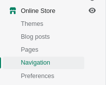
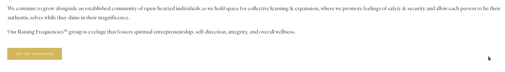
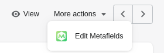
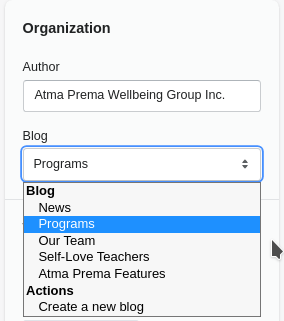

Atma Prema Workflows
Workflows for writing content
Writing content is current managed by the Shopify Content Management System and is done through Shopify's own Content writing Engine.
⚠Regarding workflow adjustmentsSometimes workflows just aren't for you. You can communicate your insights of how you work to us so we can build around your needs.
After testing and using the system for a while, you can always let us know if you need something added/streamlined as a revision
⚠Regarding changing the look and feel of content sectionsContent can be managed displayed anywhere on the site through content sections, but if you ever find that the current set does not suite your needs, we are always happy to create new sections and program new behaviors for you to show off your writing!
Also, this can be implemented by any developer familiar with HTML, CSS, Javascript and the Liquid templating language . However, please note that while Shopify has drag and drop customization, your site was NOT built with such and is completely custom built from a default template. As such, some behaviors were defined by us and this future developer is responsible for maintaining the integrity of our code as they make these changes. We are not liable for any unexpected behavior incurred by these modifications
⚠Regarding extending 'content writing' featuresExtending this system's features is possible through the use of plugins or third-party app integrations. Furthermore, you can specify your needs to an App Developer to create a service tailored to your needs. Please note, however, that in all options, you will likely be required to pay some amount for app service fees or server fees for an alternative solution as this site is considered commercial.
⚠Regarding 'tagging' content for groupingTags are delimited by
|bar, and not by the letterl/L
Introduction
Content is managed on the Shopify Blog posts section of the site under the Online Store tab of the site.
This capability is provided free along with your Shopify subscription, allowing you to edit and create written content for your site, however are still able to change your Content Management System to something more intuitive to you at any time with the help of a Shopify Developer
Blogs are composed of articles, which can be further categorized by Tags
For more information, refer to Shopify Blogs
To begin, navigate to the Blog posts section under the Online Store
Here you will see preset filters for all the categorized groups for written content.
You can create, edit, delete, and set the visibility of content. We've also given you a way of adding special fields related to the content, however how these fields are displayed may sometimes necessitate code changes. Feel free to reach out to us to add these features.
How Articles/Blog posts are displayed on pages relies on Templates, which are JSON files consisting of references to different available sections of the site and their corresponding settings.
This Template determines the layout and the style of the page and several Articles/Blog posts may share the same Template
Upon opening this tab, you should see this page:

We've taken the liberty of creating filters for each article category for your convenience

You can save your own filters after applying inputs for your own navigation. They will be saved on the top row just like the current defaults
On clicking on the Article/Blog post, you will be brought to a page where you can edit article information such as...
Title: the title of the articleContent: the main content of the articleExcerpt: the text which will display on searches of the site as well as on sections such featuring previews of the articlesWebsite CEO: overrides the excerpt's display on searches of the site as well as the url/handle of the siteVisibility: visibility of the articleFeatured Image: featured image of the articleTags: tags of the blog ( critical for handling, grouping, searching of entries in the case of blogsPrograms)Authour: the author to display on the articleBlog: what blog the site belongs to

As an addition, by clicking on More actions you can edit the metafields of the article by clicking Edit Metafields.
Metafields add additional depth to resources on the site, including articles.
They allow you to add custom fields not handled by default such as title and content.
As an example, on the Sacred Intimacy article, we select the Metafield type as Product Reference...

...and set the associated product on the page by using the products namespace with the associated_product key.
There are no pre-defined names for Metafields on Shopify. They are arbitrary and only matter in the context of how the code is structured to accept them.
If you define your own metafield outside the conventions defined by us, you will still need to modify the site's template to handle it.
In this case, this Sacred Intimacy article can display the necessary metafield because we have designed the site as per your instruction to handle this behavior.
However, you won't have to worry about adding new metafields unless you'd like to add/extend the functionality of your site.
You may just follow the conventions defined below for managing the site as it is
General Workflows for programs
Currently, content displayed about AtmaPrema programs are handled according the specific program type (either personal development or corporate sessions) .
I. Categorizing programs/Adding links to programs.
LIST view: Lists of programs
Programs of the same category can be displayed through conventions in TAGS
These programs will be display in a LIST view, to the user:


Add a category to the dropdown display by doing the following...
click on the
TAGSinput on the lower-right side of the article composition screentype in the tag you wish to group this program under, prefixed with
tag|new-category-for-programsclick "Add
tag|<new-category-for-programs>"head to
Online Store>Navigationand click onheader_menu
Click
Add menu item to <Personal Development/Corporate Wellbeing>
Now you can edit the name of this new
tag|<new-category-for-programs>category and link directly to theLISTview containing the page.To link to the
LISTpage containing all articles with the sametag|<new-category-for-programs>,- Enter the link directly on the input and click it once it appears on the dropdown
- For
LISTview for corporate wellbeing, input/pages/corporate-wellbeing/?type=<new-category-for-programs> - For
LISTview for personal development, input/pages/personal-development/?type=<new-category-for-programs>
DETAIL view: Details of one program
Instead of displaying multiple programs in a list, it is possible to link directly to the program's DETAIL view such as the image shown below:
To do this:
- Navigate to
Navigationas above, and go toheader_menu - Click
Add menu item to <Personal Development/Corporate Wellbeing> - To link to the
DETAILpage directly, clickBlog Postsand select the blog from the sidebar on the right you would like this link to direct to
⚠Linking toDETAILandLISTLinking to the two types of templates mentioned above isn't exclusive to the default navigation options of the site. You can also apply these same steps for any link setting on the Theme Editor
II. Adding painpoints to the programs
Painpoints for each program may affect how the program appears when searched in the LIST view of programs.
To add painpoints for a program, when editing or creating a new blog post
- Click on the
TAGSinput on the lower-right side of the article composition screen
- Type in the painpoint you wish to group this program under, with
painpoint|<name-of-painpoint>, separated by-
- Click "Add
painpoint|<name-of-painpoint>"
III. Changing the program template
Changing the program template is done by selecting the desired template on the Theme template dropdown

IV. Setting program capabilities
To enable the capability to receive requests for program brochures on the page, which is enabled by adding capabilities|inquiry to Tags

To add a page button directing the user to join the telegram community, add capabilities|join-telegram to Tags

V. Adding program testimonials
Click on a
Blog Post/Articleto add/edit informationClick on
Edit MetafieldsunderMore Actions
Add testimonials by inserting a metafield of type
Multi-line textwith theNamespace"testimonials"The key value can be any arbitrary value as long as it is unique across the namespace
You can edit the content of the testimonial in each entry's text area as show below.

Writing about Corporate Programs
Corporate programs using are all generally handled the same way and thus use the same template.
However within corporate programs, the following entries all have special handling and thus required specific templates of their own:
- Corporate programs Private Sessions , which uses
corporate-programs-private
To write content about corporate programs...
Simply click
Add a Blog Postand write your content or edit an existing oneSelect Program as the Blog

Type in
session|corporatein theTAGSinputClick on
session|corporateSelect the theme template to be
corporate-programsfor it have the form handling of a corporate program
Refer to Sections I-V in General Workflows for program for additional settings
Set the
VisibilitytoVisibleand clickSave
This program should now appear under "Corporate Sessions"
Writing about Personal Programs
Personal programs using are all generally handled the same way and thus use the same personal-programs template.
However within personal programs, the following entries all have special handling and thus required specific templates of their own:
- Self-love Solutions , which uses self-love
- Self-love Solutions for Kids, which uses self-love-kids
- Raising Frequencies which uses raising-frequencies
Furthermore, some personal programs such as workshops and retreats feature an associated Product entity.
These types of programs use the template personal-programs-shop
To write content about personal programs (not associated to any product) ...
Simply click
Add a Blog Postand write your content or edit an existing oneSelect Program as the Blog
Type in
session|personalin theTAGSinputClick on
session|personalSelect the theme template to be
personal-programsfor it have the form handling of a personal program

- Refer to Sections I-V in General Workflows for program for additional settings
- Set the
VisibilitytoVisibleand clickSave
This program should now appear under "Personal Programs"
To write content about personal programs (associated to some product)
Simply click
Add a Blog Postand write your content or edit an existing oneSelect Program as the Blog
Type in
session|personalin theTAGSinput (as above)Click on
session|personalSelect the theme template to be
personal-programs-shopfor it have the form handling of a personal program
To add the associated product, click on
More Actions > Edit Metafields...
Add the metafield
associated_productdefined in the template referenceSelect the product to associate to this
Article
Refer to Sections I-V in General Workflows for program for additional settings
Set the
VisibilitytoVisibleand clickSave
This program should now appear under "Personal Programs"
Writing about "Our Team"
Content for writing teachers is displayed under the blog Our Team
To add content to display under Our Team simply select the blog corresponding to Our Team after writing the article
Simply click
Add a Blog Postand write your content or edit an existing oneSelect the
Blogto beOur TeamSelect the
Theme templateto bepeople
Set the
VisibilitytoVisibleand clickSave
Writing about "Self-love Teachers"
Content for writing teachers is displayed under the blog Self-Love Teachers
To add content to display under Self-Love Teachers simply select the blog corresponding to Self-Love Teachersafter writing the article
- Simply click
Add a Blog Postand write your content or edit an existing one - Select the
Blogto beSelf-Love Teachers
- Select the
Theme templateto bepeople
- Set the
VisibilitytoVisibleand clickSave
Writing about "Features"
Content for writing teachers is displayed under the blog Features
Articles under Features are handled a bit differently from other written content,
in that they require a link to external content in content in place of regular article content:
Simply click
Add a Blog Postand write your content or edit an existing oneSet the
Titleof the article to mirror the article of the external resourceSet the
Contentof the article to be the link to the corresponding external resource.DO NOT add any other information to this input
Select the
Blogto beAtma Prema Features
Add an arbitrary excerpt for the feature.
This will be the short-form text featured on your website
In this example, we placed the media site title in bold titles and the excerpt

Add an image to the featured article

Set the
VisibilitytoVisibleand clickSaveThis program should now appear under "Atma Prema Features"
Workflows for displaying written content
As mentioned in the previous sections, content can be managed displayed anywhere on the site through Sections.
Sections are what make up the various pages of your site, and their use and configuration are stored in a Template file.
While the site is built by modifying markup and styles through HTML, CSS and JS, some basic customization is possible through the use of the Theme Editor
Before proceeding, we recommend going through a quick overview of Shopify's documentation on how to edit themes
To edit the content sections of your site, simply naviagte to the Themes tab of your Online Store:
- Click the customize button on the currently live site

Navigate to the page whose sections you wish to edit
You should see the
Theme Editoropen up which will allow you to edit/add sections for each page
For the following workflows, make sure you are already on the Theme Editor of the page you wish to customize
With the release of the site at the time of writing, these include...
- displaying Self love solutions teachers on the Self love solutions page
- displaying Self love solutions kids teachers on the Self love solutions kids page
- display Our Team members on the About Us page
- display Events on the Home page
- testimonials on the home page
- frequently asked questions
Displaying Self Love Solutions teachers (Self Love Solutions Program Page)
The steps in this workflow are a template for working on any section using the Featured Articles section.
Please refer to this workflow for any modification or addition done on any similar section.

Navigate to the Self Love Solutions page while in the Theme Editor
Look for a section called Featured Articles on the bottom right
Click
Add Articleto add a new entry to the list as a BlockOR click on an existing Block and click
Remove Blockin order to remove an existing entryTo reorder, entries, simply drag the block using by holding and dragging its right-hand side
Click
Save
Displaying Self Love Solutions for Kids teachers (Self Love Solutions Kids Program Page)

- Navigate to the Self Love Solutions Kids page while in the Theme Editor
- Follow steps 2-4 as indicated above in Displaying Self Love Solutions teachers (Self Love Solutions Program Page)
Displaying Our Team (About Us Page)
- Navigate to the About Us page while in the Theme Editor
- Follow steps 2-4 as indicated above in Displaying Self Love Solutions teachers (Self Love Solutions Program Page)
Displaying Events (Home Page)
For articles, you'll primarily be concerned with using the section Featured articles,
which will allow you to create a carousel of different written content that you've previously created.

If you're not already editing a page with
Section: Featured articles, simply add itYou can click
Add Articleto reference an article you've writtenClick
Select Articleto open a dropdown where you can search and choose an article to feature on the carouselClick
Article content links to extif the article's content links to an external resource

Adjust the section settings according to your needs
Click
Save
Writing questions/answers
If you're not already editing a page with
Section: FAQ Contact Dropdowns, simply add itClick
Add QuestionAdd the question/answer in the sidebar

Edit the
FAQ HeadingandFAQ Subtitleof the featured excerpts
Click
Saveand the changes should now reflect
Writing excerpts/testimonials not associated to any particular program
If you're not already editing a page with
Section: Featured excerpts, simply add itClick
Add: Slidein order to add an excerptsAdd some slide text representing excerpts/testimonials
Edit the title and subtitle of the featured excerpts
Click
Saveand the changes should now reflect
Adding icons to Section: Featured excerpts
Icons are handled through referencing svg's in the file snippets/icon-partners.liquid
Click
Edit codeNavigate to
icon-partners.liquidundersnippetsand you should see this file with a
case...whentag
Right below
{% case icon %}, type the name of your icon enclosed in{% when '<name-of-your-icon>' %}Copy and paste the
<svg>markup under the{% when %}tagPlease note that the
svgneeds to be a Vector images and not a Raster imageTo understand the difference, refer to Adding vector graphics to the Web
Click
Saveand the changes should now reflectGo back to the Theme Editor and add a comma-separated entry to the
Featured-logossetting ofSection: Featured excerpts
Workflows for Retail
Retail page
The Retail page displays featured collections with the use of the Collection list section
In order to add/remove collections to this section,
Click Add Collection on the Collection list section to reference a collection:
Click on the Block of the featured collection you wish to remove
Click Remove Block on the Collection list section to remove a featured collection:
Reference
Templates Reference
Templates control what's rendered on each type of page in a theme.
Each page type in an online store has an associated template type. You can use the template to add functionality that makes sense for the page type. For example, you can add additional product recommendations to a product template, or add a comment form to an article template.
You can create multiple versions of the same template type to create custom templates for different use cases. For example, you can create a separate product template for outerwear products, or a separate page template for pages with video content.
~ From Shopify Documentation on Templates
template:personal-programs:
default template for personal programs
Metafields:
testimonial (accepts multiple)
type: (Multi-line text), namespace: testimonials, key: <name-of-the-testimonial>
The associated testimonial of this particular program
Each individual testimonial can have an arbitrary unique key. The only requirement is that they share the namespace: testimonials

template:personal-programs-shop:
template for personal programs meant to be associated with a product such as workshops or retreats
Differences with the default template:
This template a displays a Call to Action for an associated product instead of a program booking form
Metafields:
associated_product
type: (Product Reference), namespace: products, key: associated_product
the associated product of this particular program

template:raising-frequencies:
unique template for the raising frequencies program

template:self-love:
unique template for the self-love-solutions program
Differences with the default template:
This template features the self-love-solutions video and the specific teachers for the program
template:self-love-kids:
unique template for the self-love-solutions for kids program
Differences with the default template:
This template features the specific teacher for the program
template:corporate-programs
default template for corporate programs
Metafields:
testimonial (accepts multiple)
type: (Multi-line text), namespace: testimonials, key: <name-of-the-testimonial>
The associated testimonial of this particular program
Each individual testimonial can have an arbitrary unique key. The only requirement is that they share the namespace: testimonials
template:corporate-programs-private:
unique corporate program template which features cross-promotion of Enlightened Leadership and the Self love Solutions

Sections Reference
Themes use sections to create your ideal layout. Most sections are made up of blocks that serve a specific function, such as headers, text, single images, a collage of images, or links. Using sections and blocks in your templates provides more flexibility in how you arrange your store's content, enabling you to control the look and feel of your online store without the need to edit code.
Each section has a specific variety of blocks that you can add to it. Which sections and blocks are available depends on your theme. For more information about what options are available to you, refer to your theme documentation.
Some sections have limits on the number of blocks that you can add, or limits on the number of blocks of a certain type. For example, the Image with text section can only display the blocks specified by the theme designer for your theme. In Dawn, the free Shopify theme, you can add only one of each of the following blocks:
- a heading
- a paragraph
- a button
You can further customize the section by editing its Settings to include an image and choose the alignment, size, background color, and what loads first when customers visit your online store.
If the sections that you add to your store layout don't include the settings or options that you need, then you can edit your theme code or contact your theme's developer for support.
~ Shopify documentation on sections
Generic sections
section: Featured articles
A section for featuring various written content managed through Shopify's Blogs through adding Blog posts as Blocks.

section: Featured excerpts
A section for featuring multiple short-form written word such as excerpts, testimonials, and quotes as a carousel, with each entry represented as a slide on the aforementioned carousel.
Content for this section is managed directly through Blocks and not through Shopify's own Content writing Engine
section: Rich text
A simple section for arbitary text and an interactive element
Blocks
- Text: arbitrary short-form text
- Button: a link to direct the user to some resource, external or on-site.
section: Image with text
A section for a column of images container and text.
This section allows you to change the order and positioning of image and text

section: Hero banner
A section meant to be arranged at the topmost position of the template.
This section accepts both still and moving background images

Blocks
- Logo: logo to display
- Title: heading text which allows for arbitrary input
- Body: content text which allows for arbitrary input
- Blog Title: block to reference blog title (only applies for blog templates)
- Collection Title: block to reference collection title (only applies for collection templates)
- Page Title (only applies for page templates)
- Article title (only applies for article templates)
section: Service banner
A form of CTA linking to a certain page
Blocks
- Title: heading text which allows for arbitrary input
- Description: content text which allows for arbitrary input
- Link: button label and link
section: Collection list
The Collection list section allows for featuring a list of active collections on the site.
You can edit the...
- sizes of the image
- colors of the blocks
- responsive behavior
of the section.
The featured collections are featured as blocks.

section: Product grid
The Product grid section allows for featuring a list of active products on the site.
You can edit the...
- filtering/sorting behavior using settings under
FILTERING AND SORTING - pagination behavior using settings under the
Products per page - image sizes and behavior
of the section.
The featured products depend on the collection the page is currently on.

Specific sections
The below sections are designed to be used specifically on certain pages or for certain pages
section: About Intro (About page)
This section was designed specifically to feature company information.
You can add/edit a caption, title, and description for this section.
You can also edit the two pictures displayed below.
section: Featured services (Corporate, Personal Programs)
This section displays a list of services.
Currently, this section is being used on the Corporate Wellbeing and Personal Development pages and is designed handling for filtering programs to the specific type.
You can set the order of programs displayed for this section using the Order of Services, using a new-line separated list of program handles.
section: Footer cta (Footer)
This section displays common cta's across all of your site's pages on the footer
You can add display up to three blocks which are forms or call-to-action's
For forms, you can specify the email's setting: Email Reason and setting: Email Response type which is relevant in the content of the email sent to the AtmaPrema email and the corresponding automated response
Additionally, use the setting: Also links to setting to set a page to open alongside the form submission.
For call-to-action's, you can specify the button label and button link using setting: Button label and setting: Button Link
section: CTA form (Footer)
This section is to display a single cta across all of your site's pages on the footer
section: FAQ Contact Dropdowns
A section of dropdowns headed with a question and reveals the answer corresponding to the question